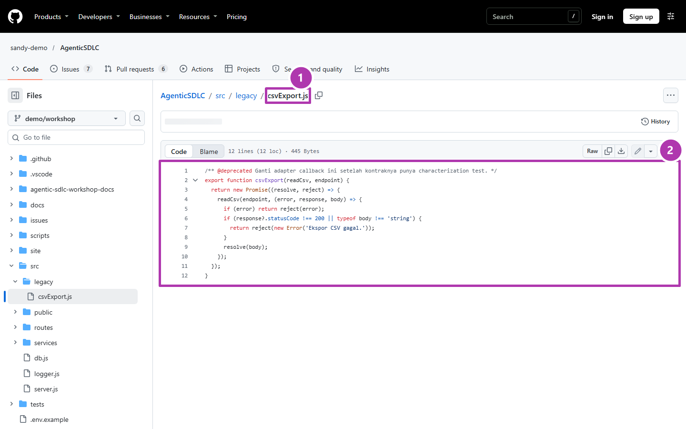
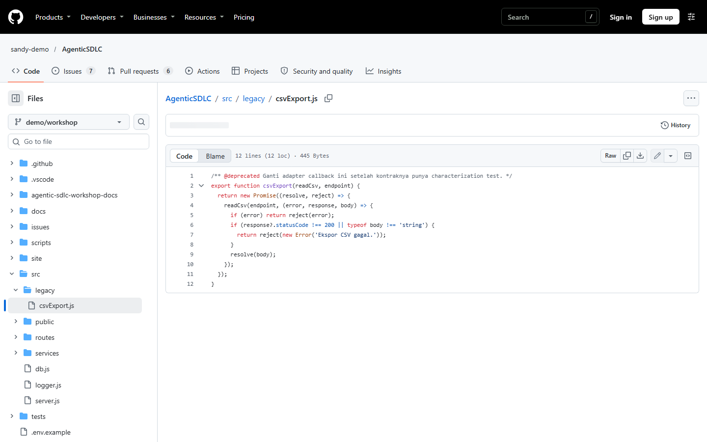
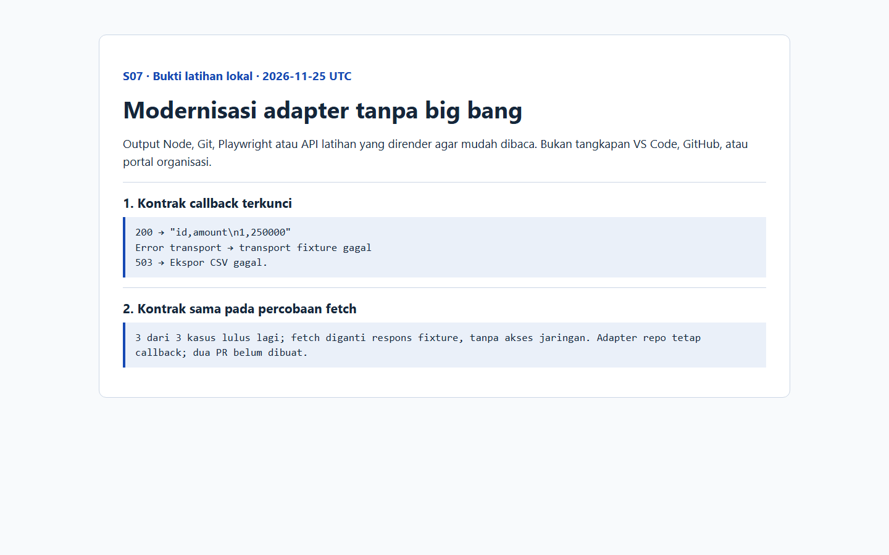

S07 · Level 2 — Delegasi asinkron
Modernisasi adapter tanpa big bang
PR pertama mengunci perilaku, PR kedua mengganti adapter dengan fetch yang bisa dites tanpa jaringan.
Status latihan: Live ditunda · S07a perlu editor agent; S07b menunggu tes S07a. Ikuti langkah · Ulangi dari awal.
Masalah yang dihadapi
Adapter ekspor CSV berbasis callback tidak punya tes karakterisasi.
Kerugian: Migrasi ditunda karena tim belum yakin kontrak tetap sama.
Masalah pada baseline
src/legacy/csvExport.js
Lihat potongan atau catatan sumber
csvExport(readCsv, endpoint) menerima transport callback; tidak ada paket deprecated yang dipasang.Solusi dan alur
PR pertama mengunci perilaku, PR kedua mengganti adapter dengan fetch yang bisa dites tanpa jaringan.
- Baca adapter lama sebelum mengubahnya. Di Code buka src/legacy/csvExport.js. Lihat callback dan tes kontrak nyata yang sudah dijalankan secara lokal. Jangan mengganti adapter sebelum tes bisa membedakan sukses dan error.
- S07a: hanya characterization test. Buat draft dari issue S07a. Di Files changed cek hanya tes, belum ada perubahan di src/legacy. Catat CSV yang dipakai dan pastikan ketiga test lulus.
- S07b: ganti callback menjadi fetch. Gunakan branch PR S07a sebagai dasar. Pindahkan pembacaan ke response.text(), pertahankan error “Ekspor CSV gagal.” untuk status bukan 200. Stub fetch agar tidak jaringan; tes S07a harus tetap sama.
Langkah demo
Baca adapter lama sebelum mengubahnya
Di Code buka src/legacy/csvExport.js. Lihat callback dan tes kontrak nyata yang sudah dijalankan secara lokal. Jangan mengganti adapter sebelum tes bisa membedakan sukses dan error.
npm run coverage
Perbesar S07-before-annotated.pngSumber GitHub · 1. Di Code buka src → legacy → csvExport.js. · 2. Cari readCsv dengan callback. Catat tiga kontrak: CSV dari status 200, error transport, dan error untuk status bukan 200. Belum ada dua PR migrasi dari agent. S07a: hanya characterization test
Buat draft dari issue S07a. Di Files changed cek hanya tes, belum ada perubahan di src/legacy. Catat CSV yang dipakai dan pastikan ketiga test lulus.
issues/S07a.mdS07b: ganti callback menjadi fetch
Gunakan branch PR S07a sebagai dasar. Pindahkan pembacaan ke response.text(), pertahankan error “Ekspor CSV gagal.” untuk status bukan 200. Stub fetch agar tidak jaringan; tes S07a harus tetap sama.
issues/S07b.md

Sebelum dan sesudah


Perbesar S07-before.pngS07-after.png| Bagian | Sebelum | Sesudah / target |
|---|---|---|
| Perilaku | Adapter callback asli dites lewat respons 200, error transport dan 503. | Percobaan fetch dengan transport dummy lulus 3/3 kontrak yang sama. Adapter repo belum diganti. |
| Bukti visual | Ada tangkapan lokal. | Belum direkam. |
| Keputusan | Peserta membaca keadaan awal. | Manusia memeriksa hasil sebelum meneruskan. |
Manfaat
- Dua perubahan kecil lebih mudah direview daripada migrasi sekaligus.
Bukti dan sumber
Template issue S07 · Data latihan dan pengukuran.


Perbesar S07-local-result.pngBukti GitHub live
3 layar yang belum direkam
S07-01-pr-tests.pngS07-02-pr-migration.pngS07-after.png
Ulangi latihan
Tinggalkan checkout yang sudah diedit dan buat checkout baru dari v0-baseline. Jangan pakai git reset --hard atau git clean pada direktori kerja bersama.
npm run reset -- --fresh